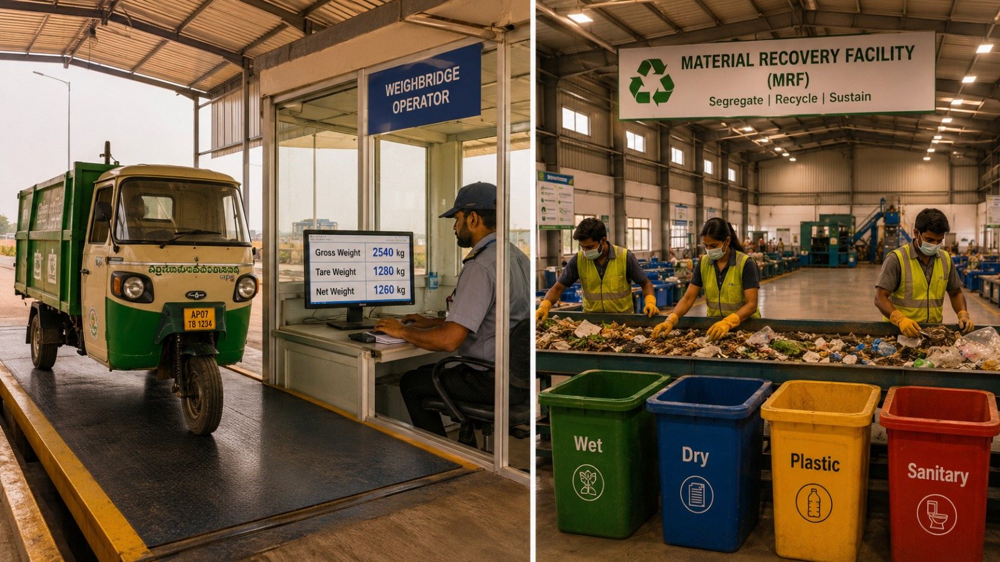

In This Article
- Why Waste Management Needs Digital Transformation
- Meet WASTRAQ — AI Intelligent Waste Management Platform
- How WASTRAQ Uses IoT, AI & Real-Time Tracking
- Smart Waste Collection & Operational Intelligence
- GPS Fleet Tracking & Real-Time Monitoring
- Key Innovations That Power WASTRAQ
- Built for Smart Cities, Industries & Global Operations
- Get Started with WASTRAQ
Why Waste Management Needs Digital Transformation

Across cities, industries, municipalities, and waste operations worldwide, one major challenge still exists — lack of real-time waste intelligence.
Traditional waste management systems often depend on manual tracking, paper-based reporting, disconnected operations, and outdated collection processes. Fleet movements are difficult to monitor, waste quantities are estimated instead of measured, and operational data is scattered across multiple systems.
This creates inefficiencies in collection routes, increases operational costs, reduces accountability, and limits the ability to generate accurate sustainability, recycling, and compliance reports. Without digital visibility, organizations struggle to optimize waste operations and achieve smarter environmental outcomes.
"Modern waste management requires real-time data, intelligent tracking, operational transparency, and smart automation to build cleaner, more sustainable cities."
— WASTRAQ Smart Waste Intelligence PlatformWASTRAQ was built to solve these challenges through AI-powered waste management, IoT-enabled monitoring, GPS fleet tracking, analytics, automation, and real-time operational intelligence.
Meet WASTRAQ — AI Intelligent Waste Management Platform
WASTRAQ is an AI intelligent waste management platform developed by M Pro9 Pvt. Ltd. to help municipalities, smart cities, industries, recyclers, and waste management companies digitize and optimize waste operations.
The platform combines AI-powered analytics, IoT integration, GPS fleet tracking, route optimization, workforce management, real-time monitoring, and operational dashboards into one centralized ecosystem designed for modern waste operations.
WASTRAQ enables organizations to replace manual processes with intelligent automation, improve collection efficiency, increase operational transparency, and make data-driven decisions through real-time digital waste intelligence.
The platform is designed to support multiple waste streams including municipal waste, plastic waste, industrial waste, commercial waste, recyclable materials, and smart city sanitation operations.
WASTRAQ is built around intelligent operational modules that work together seamlessly to simplify waste management workflows and improve sustainability outcomes.
WASTRAQ Platform Architecture
- TraqCore™ — Unified operations hub: scheduling, logistics, billing, CRM, reporting
- RouteTraq™ 3.0 — Proprietary AI routing engine with predictive scheduling
- In-Cab Driver App with offline mode and GPS tracking
- Customer Self-Service Portal (white-label ready)
- Real-Time Dashboards and Waste Analytics
- No-Code Automation Workflow Builder
- REST API + Integrations (SAP, Xero, Salesforce, Google Maps)
- Multilingual support for global deployments
RouteTraq™ 3.0 — WASTRAQ’s intelligent routing engine — uses AI-powered analytics and smart operational logic to optimize waste collection routes based on GPS data, vehicle movement, driver availability, collection schedules, and operational patterns. The platform helps organizations improve route efficiency, reduce unnecessary trips, optimize fleet utilization, and enhance overall waste collection performance through real-time digital intelligence.
How WASTRAQ Uses IoT Weighment & Real-Time Waste Tracking
One of the biggest challenges in waste management is the lack of accurate, real-time waste tracking and operational visibility.
Traditional fleet tracking systems can monitor vehicle movement, while route planning tools can help optimize travel paths. However, many systems still lack reliable mechanisms to digitally track actual waste quantities, collection activities, operational status, and real-time field data from waste operations.
WASTRAQ’s IoT-enabled waste monitoring and weighment capabilities help bridge this gap through smart digital tracking, real-time operational visibility, GPS-enabled monitoring, and intelligent data collection designed for modern waste management workflows.
⚖ How IoT Weighment Works in WASTRAQ
Every collection event is a data point. WASTRAQ captures weight at the point of collection — whether that's at a household doorstep, a commercial dumpster, or a transfer station — and pushes that verified figure directly into the TraqCore™ platform in real time.
Fixed IoT Weigh Bridges
Installed at transfer stations and material recovery facilities. Vehicles pass over the bridge on entry and exit — net weight calculated automatically, synced instantly to TraqCore™.
Vehicle-Mounted Portable Scales
For door-to-door and secondary collection vehicles. Lightweight, battery-powered scales mount directly to collection compartments. Per-collection weight recorded and geo-tagged at source.
Real-Time App Sync
Weight data flows automatically into the WASTRAQ Driver App and TraqCore™ dashboard. No manual data entry. No paper forms. Every kilogram logged with timestamp, GPS coordinates, and driver ID.
The downstream impact of this single capability is enormous. When weight data is accurate and real-time, everything else becomes possible:
Automated billing shifts from flat-rate or volume-estimate contracts to precise weight-based invoices — fairer for customers, more profitable for operators. EPR compliance reports become audit-ready instantly because every claim of material diversion is backed by a verified weight log. And carbon credit calculations — which require certified diversion data to qualify under Verra VCS or Gold Standard frameworks — can finally be computed with the accuracy that verification bodies demand.
For municipalities like Kuppam and Mysore City Corporation, the IoT weighment module also solves a deeper governance problem: accountability. When a neighbourhood committee asks "how much waste has been collected from our ward this month?", the answer is no longer "approximately" — it's a precise, timestamped figure downloadable from the WASTRAQ dashboard in seconds.
Smart Waste Collection & Operational Intelligence
Modern waste management operations require more than basic collection systems. Cities, municipalities, industries, and waste operators need intelligent platforms that can streamline collection workflows, monitor operational efficiency, and improve overall waste handling performance in real time.
Traditional collection methods often result in inefficient routing, delayed pickups, unoptimized workforce allocation, fuel wastage, and inconsistent service quality. Without centralized operational intelligence, organizations face difficulty in monitoring field activities, measuring performance, and responding quickly to operational challenges.
WASTRAQ enables smart waste collection through AI-driven operational intelligence, automated workflows, real-time collection monitoring, route optimization, task management, and digital reporting systems. The platform helps organizations improve collection efficiency, reduce operational costs, increase accountability, and deliver more sustainable waste management services.
"Smart waste collection combines automation, real-time monitoring, and operational intelligence to create faster, cleaner, and more efficient waste management systems."
— WASTRAQ Smart Waste Intelligence PlatformWith intelligent operational visibility, waste management teams can make data-driven decisions, optimize resource utilization, improve service reliability, and support long-term sustainability goals across urban and industrial environments.
GPS Fleet Tracking & Real-Time Monitoring
Efficient waste collection depends heavily on real-time fleet visibility and accurate operational tracking. Managing multiple vehicles, drivers, collection schedules, and service locations becomes challenging when organizations lack centralized GPS monitoring and live operational insights.
Many waste management systems still operate with limited fleet visibility, making it difficult to track vehicle movements, monitor route completion, analyze driver performance, and identify operational delays. This often leads to increased fuel consumption, missed collections, reduced transparency, and inefficient fleet utilization.
WASTRAQ provides advanced GPS fleet tracking and real-time monitoring capabilities that allow organizations to track waste collection vehicles live, monitor operational status, optimize routes, and improve overall fleet efficiency. The platform delivers real-time location intelligence, vehicle activity monitoring, automated alerts, and operational dashboards for complete fleet visibility.
"Real-time GPS tracking empowers waste management organizations with operational transparency, smarter routing, faster response times, and improved service accountability."
— WASTRAQ Smart Waste Intelligence PlatformThrough intelligent tracking and monitoring, organizations can improve collection efficiency, reduce operational risks, optimize fuel usage, strengthen compliance reporting, and ensure more reliable waste management operations across cities and industries.
WASTRAQ Platform — At a Glance
Core Technologies: AI Analytics, IoT Integration, GPS Fleet Tracking, Real-Time Monitoring, Smart Automation
Platform Capabilities: Waste Collection Management, Route Optimization, Workforce Monitoring, Complaint Management, Geo-Tagged Proof of Service, Smart Dashboards & Analytics
Operational Modules: Fleet Management, Driver App, Attendance Tracking, Route Planning, Reporting, Notifications, Billing & CRM Integration
Deployment Support: Municipalities, Smart Cities, Industries, Recyclers, Commercial Waste Operators & Environmental Organizations
Vision: Building AI intelligent waste management systems for smarter operations, cleaner environments, and sustainable digital waste ecosystems.
What makes WASTRAQ distinctive is its ability to integrate every stage of waste management into one intelligent digital ecosystem. The platform is not limited to route tracking alone — it combines fleet management, workforce monitoring, IoT-based waste tracking, analytics, reporting, GPS verification, and operational automation within a centralized platform.
WASTRAQ enables organizations to monitor collection activities in real time, improve workforce accountability, optimize operational workflows, and generate reliable digital records for waste operations. Every collection event can be time-stamped, GPS-verified, digitally recorded, and monitored through live dashboards, helping reduce operational gaps and improve transparency across the waste management process.
By replacing manual processes with intelligent digital systems, WASTRAQ helps municipalities, industries, recyclers, and waste management companies improve efficiency, reduce operational disputes, enhance service visibility, and make better data-driven decisions through real-time operational intelligence.
Kuppam Municipal Corporation: A Live Proof of Concept

If you want to see WASTRAQ in action today, look no further than Kuppam Municipal Corporation in Andhra Pradesh.
Kuppam is one of WASTRAQ's first live municipal deployments in India — and it's already processing over 100+ waste collections daily through the platform. The Kuppam pilot is significant not just because it works, but because it demonstrates WASTRAQ's ability to handle the specific complexities of Indian municipal waste operations: mixed waste streams, informal sector integration, variable collection infrastructure, and the need for compliance reporting that satisfies both state and central government requirements.
Kuppam Municipal Corporation, Andhra Pradesh
Kuppam Municipal Corporation deployed WASTRAQ to digitise its entire waste collection workflow — from driver route assignment and real-time fleet monitoring to IoT-based weight capture and automated compliance reporting. The deployment included face recognition attendance for all sanitation workers, GPS route tracking, and secure digital collection records.
The platform went live in days, not months. WASTRAQ's 4-step onboarding model — Discovery Call, Data Migration, Team Training, Go Live — meant that Kuppam's operational teams were handling the software independently within 48 hours of driver onboarding. The result: a municipality that previously had no reliable digital record of its daily waste operations now generates audit-ready reports in real time.
The Kuppam deployment also demonstrated WASTRAQ’s advanced operational capabilities including face recognition attendance, GPS-enabled workforce monitoring, real-time collection tracking, and secure digital record management. Sanitation workers can clock in through the WASTRAQ Driver App using digital attendance systems, helping improve workforce accountability, attendance visibility, and operational coordination.
WASTRAQ also enables organizations to maintain centralized digital collection records with time-stamped activity logs, GPS verification, geo-tagged monitoring, and real-time operational reporting. These capabilities help improve transparency, reduce manual errors, streamline reporting workflows, and support smarter waste management operations through reliable digital data systems.
Key Innovations That Power WASTRAQ
WASTRAQ combines multiple intelligent technologies into one centralized waste management platform designed to improve operational efficiency, monitoring, automation, and real-time digital visibility across waste management workflows.
AI-Powered Route Optimization
WASTRAQ uses intelligent analytics and smart operational logic to optimize waste collection routes, improve fleet efficiency, reduce unnecessary trips, and support smarter day-to-day waste operations through real-time digital intelligence.
Real-Time GPS Fleet Tracking
Monitor vehicles, drivers, routes, and collection activities in real time through centralized dashboards with GPS-enabled tracking, geo-tagged monitoring, operational visibility, and live waste collection updates.
IoT & Smart Waste Monitoring
WASTRAQ supports IoT-enabled operations including smart monitoring, digital waste tracking, real-time operational data collection, intelligent reporting, and connected waste management workflows for modern operations.
Centralized Analytics & Automation
The platform combines dashboards, reporting, workforce management, complaint handling, attendance tracking, notifications, GPS fleet monitoring, analytics, and workflow automation into one centralized AI intelligent waste management ecosystem.
These innovations make WASTRAQ a powerful platform for modern waste management operations. From AI-powered route optimization and IoT-enabled waste tracking to real-time monitoring, smart analytics, automation, and operational intelligence, WASTRAQ helps organizations improve efficiency, transparency, accountability, and sustainability outcomes.
WASTRAQ enables municipalities, smart cities, industries, recyclers, and waste management companies to digitize waste operations, optimize collection workflows, monitor fleets in real time, improve workforce coordination, and generate data-driven insights through centralized dashboards and intelligent automation tools.
Built for Smart Cities, Industries & Global Waste Operations
WASTRAQ was designed as a scalable digital waste management platform capable of supporting both local operations and large-scale global deployments.
The platform architecture is built to handle diverse waste management requirements including municipal solid waste, industrial waste, commercial waste, recycling operations, smart sanitation systems, fleet monitoring, and sustainability reporting.
With modular deployment capabilities, real-time cloud infrastructure, multilingual support, GPS-enabled operations, AI-powered analytics, and IoT integrations, WASTRAQ can adapt to the operational needs of municipalities, enterprises, recyclers, and environmental organizations across different regions and industries.
What Makes WASTRAQ a Smart Digital Waste Management Platform
Modern waste management operations require more than simple tracking systems. Municipalities, industries, recyclers, and smart cities need intelligent platforms capable of managing real-time operations, workforce coordination, GPS fleet monitoring, analytics, reporting, and operational automation from a single ecosystem.
AI-Powered Route Optimization
WASTRAQ uses intelligent route planning and operational analytics to improve collection efficiency, reduce unnecessary trips, optimize fleet movement, and enhance overall waste collection performance.
Real-Time GPS Fleet Tracking
Monitor vehicles, drivers, collection activities, and operational workflows in real time through centralized dashboards with live GPS-enabled visibility and geo-tagged monitoring.
IoT & Smart Monitoring Integration
WASTRAQ supports IoT-enabled operations including smart tracking, real-time monitoring, digital waste intelligence, sensor integrations, and automated operational data collection.
Scalable & Centralized Platform
Built for municipalities, smart cities, industries, recyclers, and waste management companies, WASTRAQ provides scalable operational modules, centralized dashboards, real-time monitoring, analytics, reporting, GPS fleet tracking, and workflow automation within a unified digital platform.
WASTRAQ is designed to help waste management organizations improve operational efficiency, digitize collection workflows, enhance monitoring capabilities, and optimize daily waste operations through AI-powered analytics, IoT integrations, automation tools, and real-time operational intelligence.
The platform supports modern waste management requirements including route optimization, workforce monitoring, geo-tagged collection tracking, digital reporting, operational transparency, and centralized waste intelligence for both local and large-scale deployments.
WASTRAQ also simplifies onboarding and deployment for operational teams. The platform is built for rapid implementation, allowing municipalities, industries, and waste management operators to quickly digitize workflows, onboard teams, and start monitoring operations through centralized dashboards and smart automation tools.
Discovery Call
Understand your fleet, routes, customer base, and compliance requirements. Map WASTRAQ modules to your specific needs.
Data Migration
Import existing routes, customer data, and vehicle records. WASTRAQ's migration tools handle the heavy lifting.
Team Training
Drivers onboarded in under 48 hours. Admin teams trained on TraqCore™ dashboards. No coding required, ever.
Go Live & Grow
Start collecting, tracking, billing, and reporting from day one. WASTRAQ scales with you as operations expand.
The Bigger Picture: Why Digital Waste Intelligence Matters Now
Modern waste management is rapidly evolving as municipalities, smart cities, industries, and environmental organizations move toward data-driven, technology-enabled operations. Increasing urbanization, growing waste volumes, sustainability goals, and operational challenges are creating demand for smarter and more efficient waste management systems.
Organizations today require better operational visibility, real-time monitoring, digital reporting, route optimization, fleet tracking, and centralized waste intelligence to improve efficiency and support long-term sustainability objectives. Traditional manual processes and disconnected systems are no longer sufficient for managing large-scale waste operations effectively.
In this environment, digital waste management platforms like WASTRAQ help organizations improve operational transparency, optimize collection workflows, monitor waste operations in real time, and make better data-driven decisions through AI-powered analytics, IoT integrations, GPS tracking, automation, and centralized dashboards.
WASTRAQ represents a scalable approach to modern waste management by helping municipalities, industries, recyclers, and waste management companies transition from manual processes to intelligent digital operations that support efficiency, accountability, sustainability, and smarter environmental management.
"The future of waste management depends on real-time intelligence, operational transparency, and smarter digital systems that help build cleaner and more sustainable environments."
— WASTRAQ Smart Waste Intelligence PlatformReady to Digitise Your Waste Operations?
Whether you're a municipal corporation looking to modernise or a private operator seeking to scale globally, WASTRAQ has a deployment model built for you.